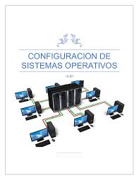

Nuestros Servicios
En D Todo Computadoras, ofrecemos una amplia gama de servicios para satisfacer todas tus necesidades informáticas.
Reparación de Computadoras
Contamos con técnicos expertos en la reparación de todo tipo de computadoras, desde equipos de escritorio hasta laptops. Solucionamos problemas de hardware y software de manera rápida y eficiente.
Venta de Internet
Ofrecemos soluciones de internet vía fibra óptica y antena en frecuencias 2.4 y 5.8, brindando una conexión rápida y estable para tus necesidades personales o empresariales.
Sistemas de Cámaras de Seguridad
Instalamos sistemas de cámaras de seguridad de última generación para proteger tu hogar o negocio. Nuestros sistemas son confiables, fáciles de usar y ofrecen una excelente calidad de imagen.

Configuración de Equipos de Alta Tecnología
Nuestros expertos están capacitados para configurar y optimizar todo tipo de equipos de alta tecnología, desde servidores hasta dispositivos móviles, para garantizar un rendimiento óptimo y seguridad.
